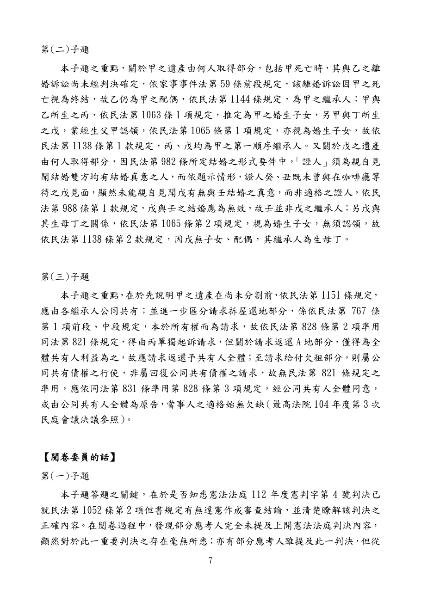
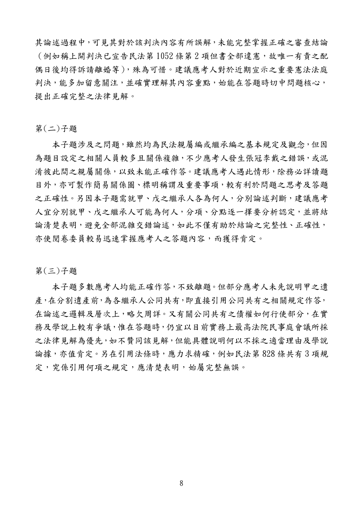

遺產還沒分，丙能一個人去告嗎？
112年律師第二試｜民法與民事訴訟法（一）｜第二題第（三）小題（25分）
題目
本頁只做第（三）小題，與本題直接相關的事實以黃色標示。
法院於112年5月30日為第一審判決，敗訴之一方已依法提起上訴，嗣甲於112年7月30日死亡，甲死亡後遺有A地、B屋（含基地），其遺產尚未分割。其中A地由庚無權占有並於其上擅自搭建C屋使用，B屋於甲生前即出租於辛，惟辛自111年7月1日起積欠租金，經甲屢次催告均置之不理，迄甲死亡時已積欠租金達新臺幣（下同）60萬元。
戊於甲死亡後於咖啡廳與網友壬見面，與壬甫結識2小時即決定結婚，壬當場書立結婚書約，因咖啡廳內只有店員一人且不願意擔任結婚證人，故壬外出覓得原不相識之路人癸、丑於結婚書約證人欄簽名，戊則於咖啡廳內等待壬取得證人簽名，再與壬持該結婚書約共赴戶政事務所辦理結婚登記，嗣戊於結婚登記翌日死亡。試問：
- （一）第一審法院為本案判決時，應如何判斷甲之離婚請求有無理由？（25分）
- （二）甲之遺產由何人繼承取得？戊之遺產由何人繼承取得？（25分）
- （三）丙是否得單獨對庚起訴，請求拆除C屋、返還A地？是否得單獨對辛起訴請求給付112年7月30日以前積欠之租金60萬元？（25分）本頁只做這一題
影片說明
先看兩個請求
庚占有A地
丙可以單獨起訴請求拆除C屋；A地要請求返還給全體公同共有人。
所有權請求
§828Ⅱ → §821
辛積欠租金
丙若要單獨起訴，原則上須得其他公同共有人全體同意；也可由全體為原告。
公同共有債權
§831 → §828Ⅲ
甲死亡後，遺產未分割，依第1151條公同共有。依前題分析，戊先承繼甲的權利，戊死亡後再由丁繼承；本題定稿據此前提以乙、丙、丁為公同共有人。
換個對象，判斷會變嗎？
點選請求對象，看看丙能否一個人起訴。
第767條第1項前段、中段；第828條第2項準用第821條。
從請求權基礎開始
對庚：民法第767條第1項前段、中段
庚無權占有土地，得請求返還A地；C屋妨害土地所有權，得請求拆除C屋。第828條第2項準用第821條，讓丙得單獨就土地全部主張；返還土地須為全體利益。
對辛：租賃契約與民法第421條第1項、第439條
甲與辛的租賃契約是請求租金的基礎。甲死亡前的60萬元欠租，依第1148條由繼承人承受，分割前為公同共有債權。
依第831條準用第828條第3項，除法律另有規定外，須其他公同共有人全體同意，或由全體為原告。請求債務人給付欠租，沒有準用第821條的回復共有物規定。
民法第1151條：遺產歸誰
繼承人有數人時，分割遺產前，各繼承人對遺產全部為公同共有。這條說明遺產歸屬，租金仍須回到租賃契約尋找請求權基礎。
擬答
經教師同意之定稿，558字。含標點、編號及條號，不計空白換行。
丙得單獨對庚起訴請求拆除C屋，並請求將A地返還於公同共有人全體；對辛請求給付欠租60萬元，未得其他公同共有人全體同意，不得單獨起訴。
一、甲之遺產為繼承人公同共有
A地、B屋及欠租債權均屬甲之遺產。遺產分割前，各繼承人對於遺產全部為公同共有（第1151條）。依前題，戊之權利由丁繼承，公同共有人為乙、丙、丁。
二、丙得單獨對庚請求拆屋還地
（一）庚無權占有A地並擅自搭建C屋，所有人得依第767條第1項前段請求返還A地，依同項中段請求除去妨害，即拆除C屋。
（二）此為本於所有權之請求，依第828條第2項準用第821條，丙得單獨起訴。惟回復共有物之請求，僅得為共有人全體之利益為之，丙應請求庚將A地返還於公同共有人全體，不得請求返還於自己。
三、丙不得單獨對辛請求給付欠租
（一）甲生前出租B屋予辛，得依租賃契約請求辛支付租金（第421條第1項、第439條）。甲死亡前之欠租60萬元，經繼承為公同共有債權（第1148條、第831條）。
（二）請求給付欠租，係公同共有債權之權利行使，非屬回復公同共有債權之請求，無第821條之準用，應依第831條準用第828條第3項，須得其他公同共有人全體之同意，或由全體為原告，當事人適格始無欠缺（最高法院104年度第3次民事庭會議決議）。題示未見其他公同共有人同意，丙單獨起訴，當事人適格有欠缺。
評分要點與閱卷委員的話
以下圖片分別為官方評分要點第7頁、第8頁；第（三）小題位於各頁下半部。
評分要點第7頁

閱卷委員的話第8頁

閱卷委員提醒先寫遺產公同共有、註明第828條的項次。公同共有債權的行使另有爭議；若採不同見解，須具體說明理由。